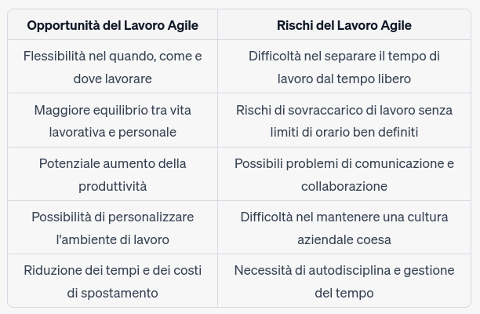

Luca: Vorrei che tu leggessi il contenuto del pdf al link ..., in modo che poi io ti possa fare qualche domanda al proposito.
ChatGPT: Ho caricato con successo il PDF dal link fornito. Ora puoi farmi domande sul contenuto del documento e farò del mio meglio per fornirti le risposte basate sul contenuto del PDF.
Luca: Qual è il contenuto generale del documento? Me ne proponi una breve sintesi, scritta per persone che non abbiano una specifica precompetenza dell'argomento trattato?
ChatGPT: Il documento intitolato "Il Lavoro Agile" è una guida che fornisce una panoramica completa sul lavoro agile, una modalità di lavoro flessibile che sta diventando sempre più popolare nelle organizzazioni moderne.
Il documento inizia con una definizione di cosa sia il lavoro agile, spiegando che si tratta di un approccio al lavoro che enfatizza la flessibilità, la libertà e la possibilità per i lavoratori di scegliere come, quando e dove lavorare. Questo approccio può portare a una maggiore produttività, soddisfazione sul lavoro e bilanciamento tra vita lavorativa e personale.
Successivamente, il documento esplora i vari aspetti del lavoro agile, tra cui le sue origini, i suoi benefici, le sue sfide e come può essere implementato con successo nelle organizzazioni. Viene anche fornito un quadro normativo di riferimento per il lavoro agile in Italia.
Infine, il documento discute di come il lavoro agile può influenzare la cultura aziendale e come può essere utilizzato per attrarre e trattenere i talenti. Viene anche esaminato l'impatto del lavoro agile sulla salute e il benessere dei lavoratori.
In sintesi, "Il Lavoro Agile" è una guida completa che fornisce una panoramica dettagliata del lavoro agile, dalle sue origini ai suoi benefici e sfide, e offre consigli pratici su come implementarlo con successo nelle organizzazioni.
Luca: Ottimo. Potesti ora fare una sintesi analoga, ma in due soli paragrafi e rivolta a ragazzi di 14 anni, per mostrare loro l'importanza di questo argomento?
ChatGPT: "Il Lavoro Agile" è un documento che parla di un modo nuovo e flessibile di lavorare. Immagina di poter scegliere quando, come e dove lavorare, invece di dover stare in ufficio dalle 9 alle 5. Questo è il lavoro agile! Può rendere le persone più felici e produttive, perché possono bilanciare meglio il lavoro con le altre cose importanti della vita, come la scuola, gli hobby o passare del tempo con gli amici e la famiglia.
Il documento spiega anche che il lavoro agile non è sempre facile. Ci sono delle sfide da affrontare, come ad esempio capire come lavorare bene insieme quando non si è nello stesso posto. Ma se fatto nel modo giusto, il lavoro agile può cambiare in meglio il modo in cui le persone lavorano e vivono. Quindi, anche se sei solo un ragazzo di 14 anni, è importante sapere che esistono modi di lavorare diversi da quelli tradizionali. Chissà, potrebbe essere il futuro del lavoro!
Luca: Molto chiaro. Vorrei ora capire meglio il concetto di 'diritto alla disconnessione', per come discusso nel documento: puoi aiutarmi?
ChatGPT: Il documento discute il "diritto alla disconnessione" nel contesto del lavoro agile. Ecco alcuni punti chiave:
-- Il diritto alla disconnessione è un concetto che si riferisce alla capacità di un lavoratore di disconnettersi dal lavoro e dalle comunicazioni relative al lavoro durante il tempo libero. Questo diritto è particolarmente rilevante nel contesto del lavoro agile, dove la linea tra il tempo di lavoro e il tempo libero può diventare sfumata.
-- Il documento sottolinea che il diritto alla disconnessione è un elemento fondamentale per garantire il rispetto del tempo di riposo, dei limiti massimi della durata del lavoro e della vita privata dei lavoratori.
-- Viene menzionato che il diritto alla disconnessione è riconosciuto dalla legge italiana. In particolare, l'articolo 19 del Decreto Legislativo 81/2015 stabilisce che i lavoratori hanno il diritto di non essere raggiunti al di fuori dell'orario di lavoro, ad eccezione dei casi di necessità ed urgenza.
-- Il documento suggerisce che le aziende dovrebbero adottare politiche specifiche per garantire il diritto alla disconnessione. Queste politiche potrebbero includere misure come la definizione di orari specifici durante i quali i lavoratori non dovrebbero essere contattati per questioni di lavoro.
-- Infine, il documento sottolinea l'importanza di una corretta formazione e sensibilizzazione dei lavoratori e dei datori di lavoro riguardo al diritto alla disconnessione e alle sue implicazioni.
Luca: Riesci a presentare questi stessi "punti chiave" in un diagramma, che sia efficace per evidenziare i temi più importanti e le loro relazioni?
ChatGPT: Ecco un diagramma che riassume i punti chiave del "diritto alla disconnessione" come discusso nel documento:
Luca: Eccellente lavoro, grazie. Supponiamo che mi sia stato proposto di preparare un poster, rivolto ai dipendenti di un'azienda, per informare in modo semplice e attraente su opportunità e rischi del lavoro agile. Il poster dovrebbe avere un titolo corretto, ma che richiami l'attenzione. Puoi aiutarmi, includendo, sotto al titolo e magari a un sottotitolo di introduzione, due parti, una per le opportunità e una per i rischi?
ChatGPT: Titolo: Navigare nel Mondo del Lavoro Agile: Opportunità e Sfide
Sottotitolo: Scopri come il Lavoro Agile può trasformare il tuo modo di lavorare

Ricorda: Il Lavoro Agile è un viaggio, non una destinazione. È importante essere consapevoli delle sue opportunità e sfide per navigare con successo in questo nuovo mondo del lavoro.
Luca: Mi scrivi ora, in due frasi, una descrizione del contenuto di questo documento, in inglese, in francese, e in milanese?
ChatGPT: Certo, ecco la descrizione del contenuto del documento in inglese, francese e milanese:
Inglese: "The Agile Work" is a comprehensive guide that provides an overview of agile work, a flexible work approach that is becoming increasingly popular in modern organizations. It discusses the various aspects of agile work, including its origins, benefits, challenges, and how it can be successfully implemented in organizations.
Francese: "Le Travail Agile" est un guide complet qui donne un aperçu du travail agile, une approche de travail flexible qui devient de plus en plus populaire dans les organisations modernes. Il discute des différents aspects du travail agile, y compris ses origines, ses avantages, ses défis et comment il peut être mis en œuvre avec succès dans les organisations.
Milanese: "El Lavór Àgil" l'è na guida completa che la dà na vision general del lavór àgil, un mod de lavór flessibil che l'è denterà semper pì popolàr in di organizzazion modern. La parla de i vari aspett del lavór àgil, compres i so origin, i so benefici, i so sfid e come el pö vess implementà con sucess in di organizzazion.
Luca: Bene. E, per finire, vedi qualche aspetto del complesso tema trattato nel documento che potrebbe essere sviluppato ulteriormente, magari per una versione successiva del documento stesso?
ChatGPT: Sulla base del contenuto del documento e delle tendenze attuali nel campo del lavoro agile, ecco alcune aree che potrebbero essere sviluppate ulteriormente in una versione futura del documento:
-- Tecnologia e Strumenti: Mentre il documento discute del concetto di lavoro agile, potrebbe essere utile esplorare più in dettaglio le tecnologie e gli strumenti che facilitano il lavoro agile. Questo potrebbe includere piattaforme di comunicazione, strumenti di gestione dei progetti, software per la condivisione di documenti, ecc.
-- Casi di Studio: Potrebbe essere utile includere più casi di studio di organizzazioni che hanno implementato con successo il lavoro agile. Questi casi di studio potrebbero fornire esempi pratici e lezioni apprese che potrebbero essere utili per altre organizzazioni che stanno considerando di adottare il lavoro agile.
-- Gestione del Cambiamento: Implementare il lavoro agile è un cambiamento significativo per molte organizzazioni e può richiedere una gestione del cambiamento efficace. Il documento potrebbe esplorare più in dettaglio come gestire questo cambiamento, come coinvolgere i dipendenti nel processo e come superare la resistenza al cambiamento.
-- Salute Mentale: Mentre il documento discute dell'impatto del lavoro agile sulla salute e il benessere, potrebbe essere utile esplorare più in dettaglio l'impatto del lavoro agile sulla salute mentale dei lavoratori. Questo potrebbe includere discussioni su come prevenire l'isolamento, gestire lo stress e mantenere un equilibrio tra lavoro e vita personale.
-- Formazione e Sviluppo: Infine, potrebbe essere utile discutere di come le organizzazioni possono fornire formazione e sviluppo per i lavoratori in un ambiente di lavoro agile. Questo potrebbe includere la formazione su nuovi strumenti e tecnologie, così come lo sviluppo di competenze come l'autogestione, la comunicazione a distanza e la gestione del tempo.
Luca: Grazie per questi contributi.
ChatGPT: Prego! Sono felice di aver potuto aiutarti. Se hai altre domande o hai bisogno di ulteriori informazioni, non esitare a chiedere. Buon lavoro con il tuo progetto sul lavoro agile!